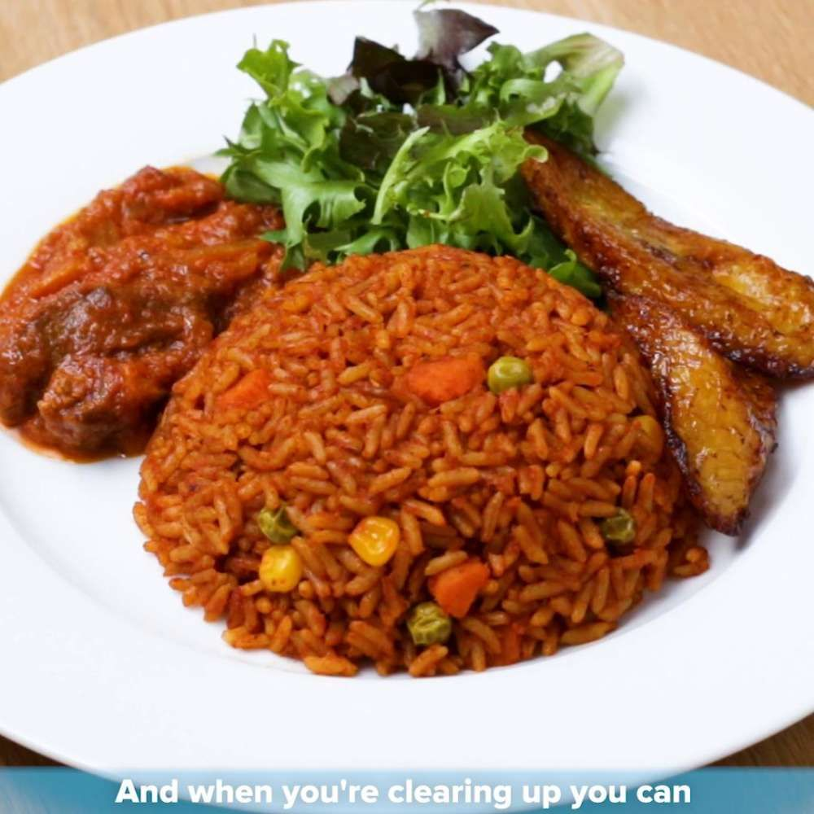

Jollof Rice Recipe

ingredients
- Rice
- pepper
- onions
- Seasoning
- salt, et.c
procedures for preparing jollof rice
- Cook the rice till tender and set aside.
- Pour chicken stock into the pot.
- Add the tomato stew, the coocked rice,
check that the water is the same level as the rice.
- Add pepper, salt & seasoning to taste.
- Stir, cook at low medium heat till the water is dry.
- Serve and enjoy.